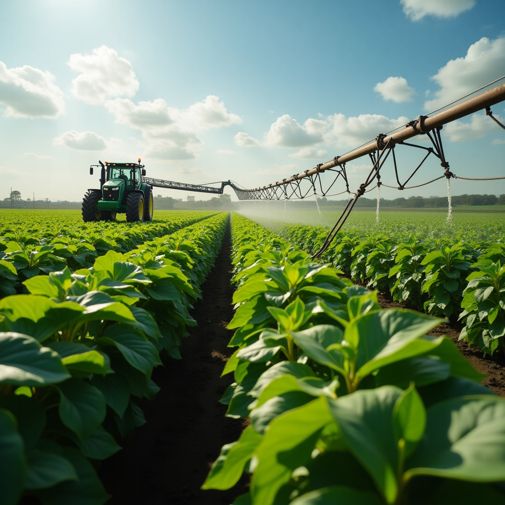

Produção responsável
Cultivar com respeito ao solo e à água para alimentar gerações.
Produzir alimentos de qualidade enquanto preserva a natureza é o caminho para um futuro melhor.
mais eficiência com práticas sustentáveis
menos desperdício de água
O que é Agro Forte?
O agro fortalece a economia quando alia produção responsável à proteção do meio ambiente.
Cultivar com respeito ao solo e à água para alimentar gerações.
Uso de solar e biogás para reduzir emissões no campo.
Rotação de culturas e compostagem fortalecem a terra.
Irrigação inteligente que economiza água e protege nascentes.

Sustentabilidade
A sustentabilidade ajuda a produzir mais sem prejudicar o meio ambiente.
Tecnologia Rural
A tecnologia permite aumentar a produção e reduzir impactos ambientais.

Futuro Sustentável
O equilíbrio entre produção e preservação garante alimentos para as próximas gerações.
produtores comprometidos com práticas sustentáveis
uso consciente da água em fazendas modernas
redução de resíduos com tecnologia no campo
Simulador de Fazenda Sustentável
Escolha práticas sustentáveis e veja o impacto em produção e meio ambiente.
Selecione estratégias sustentáveis para melhorar o impacto.
Os resultados apresentados são estimativas educativas utilizadas para demonstrar a relação entre produtividade e sustentabilidade.